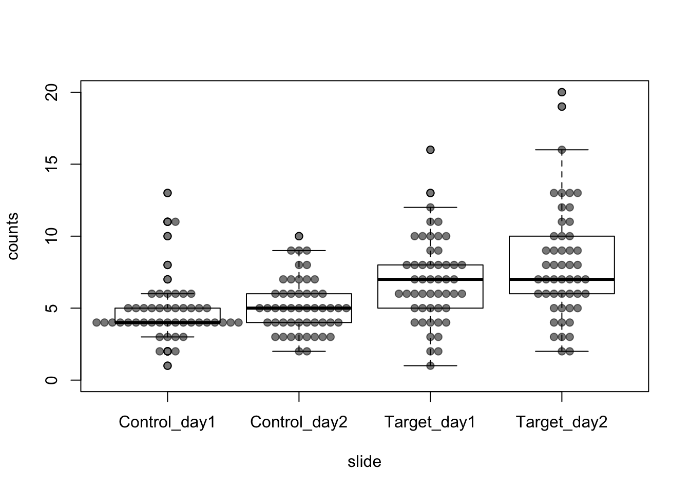

Generalized Linear Mixed Effect Models
Microscopy Data
- cells were stained for centromeric marker
- outcome: number of centromeric clusters (counts)
- conditions: Target vs. Control RNAi
- replicate: experimental day
- 4 microscopy slides in total
- cells are not independent on the same slide
# insert data
dat <- data.frame(experiment = rep(c("day2", "day2", "day2", "day2", "day2", "day2", "day2", "day2", "day2", "day2", "day2", "day2", "day2", "day2", "day2", "day2", "day2", "day2", "day2", "day2", "day2", "day2", "day2", "day2", "day2", "day2", "day2", "day2", "day2", "day2", "day2", "day2", "day2", "day2", "day2", "day2", "day2", "day2", "day2", "day2", "day2", "day2", "day2", "day2", "day2", "day2", "day2", "day2", "day2", "day2", "day1", "day1", "day1", "day1", "day1", "day1", "day1", "day1", "day1", "day1", "day1", "day1", "day1", "day1", "day1", "day1", "day1", "day1", "day1", "day1", "day1", "day1", "day1", "day1", "day1", "day1", "day1", "day1", "day1", "day1", "day1", "day1", "day1", "day1", "day1", "day1", "day1", "day1", "day1", "day1", "day1", "day1", "day1", "day1", "day1", "day1", "day1", "day1", "day1", "day1"),2),
RNAi = rep(c("Control", "Target"), each = 100),
counts = c(6, 6, 4, 6, 3, 5, 10, 9, 5, 4, 8, 4, 9, 7, 7, 2, 6, 9, 4, 3, 5, 4, 4, 2, 8, 4, 5, 6, 3, 7, 7, 4, 6, 3, 3, 3, 7, 5, 5, 4, 5, 5, 5, 6, 5, 3, 3, 4, 5, 5, 2, 3, 4, 4, 4, 7, 5, 4, 6, 4, 5, 4, 4, 5, 4, 4, 5, 2, 5, 4, 5, 4, 6, 10, 5, 6, 4, 11, 3, 13, 3, 6, 3, 5, 5, 4, 4, 4, 4, 6, 8, 6, 4, 11, 5, 4, 5, 1, 2, 4, 16, 6, 9, 7, 11, 12, 6, 3, 7, 8, 8, 12, 7, 9, 5, 9, 5, 10, 7, 6, 7, 19, 3, 13, 7, 6, 13, 8, 8, 11, 7, 13, 10, 6, 4, 13, 3, 4, 2, 10, 6, 8, 6, 9, 9, 5, 4, 20, 2, 5, 7, 5, 10, 4, 7, 5, 6, 3, 4, 7, 9, 8, 16, 6, 10, 8, 5, 6, 4, 11, 6, 2, 6, 8, 11, 6, 5, 8, 8, 7, 10, 9, 7, 4, 6, 8, 2, 10, 7, 8, 3, 4, 10, 13, 6, 12, 8, 1, 5, 6))
# group for each slide
dat$slide <- factor(paste(dat$RNAi, dat$experiment, sep = "_"))
# relevel RNAi
dat$RNAi <- relevel(dat$RNAi, ref = "Control")
# check factor levels
str(dat)## 'data.frame': 200 obs. of 4 variables:
## $ experiment: Factor w/ 2 levels "day1","day2": 2 2 2 2 2 2 2 2 2 2 ...
## $ RNAi : Factor w/ 2 levels "Control","Target": 1 1 1 1 1 1 1 1 1 1 ...
## $ counts : num 6 6 4 6 3 5 10 9 5 4 ...
## $ slide : Factor w/ 4 levels "Control_day1",..: 2 2 2 2 2 2 2 2 2 2 ...# simple summary
summary(dat)## experiment RNAi counts slide
## day1:100 Control:100 Min. : 1.000 Control_day1:50
## day2:100 Target :100 1st Qu.: 4.000 Control_day2:50
## Median : 6.000 Target_day1 :50
## Mean : 6.275 Target_day2 :50
## 3rd Qu.: 8.000
## Max. :20.000Data Visualization
- visualization of the datapoints (beeswarm) and boxplot
- effect looks ‘clear’ by eye
- it does not look normally distributed (also tied values)
- variance does not look homogeneous
library(beeswarm)
boxplot(counts ~ slide, data = dat, ylim = c(0,20))
beeswarm(counts ~ slide, data = dat, pch=19, col="#00000088", add = TRUE)
Data Distribution
- inspecting data distribution by qqplot
- Poisson and negative binomial looks better
library(car)
library(MASS)
par(mfrow = c(1,4), cex=1.1)
attach(dat)
# normal distribution (it does not look "normal")
qqp(counts, "norm", pch = 20)
# lognormal distribution
qqp(counts, "lnorm", pch = 20)
# Poisson distribution
poisson <- fitdistr(counts, "Poisson")
qqp(counts, "pois", lambda = poisson$estimate, pch = 20)
# negative binomial distribution (Poisson + overdispersion)
negbinom <- fitdistr(counts, "negative binomial")
qqp(counts, "nbinom", size = negbinom$estimate[1], mu = negbinom$estimate[2], pch = 20)Mixed Effect models
- the model contains fixed and random effects
- beta - vector of fixed effects
- u - vector of random effects
- formula:

Source: wikipedia
Wikipedia Links:
https://en.wikipedia.org/wiki/Multilevel_model
https://en.wikipedia.org/wiki/Mixed_model
- general scheme how to choose fixed and mixed effect models

MASS glmmPQL
- fit a glmm
- fixed effect: RNAi (treatment)
- random intercept: slide (groups)
- negative binomial family
# fit a fixed effect glm for estimating theta (dispersion) parameter
glm_fixed <- glm.nb(counts ~ RNAi, data = dat)
theta <- glm_fixed$theta
# use theta in glmm
glmm <- glmmPQL(counts ~ RNAi, random = ~1|slide, data = dat, family = negative.binomial(link = "log", theta = theta))
summary(glmm)## Linear mixed-effects model fit by maximum likelihood
## Data: dat
## AIC BIC logLik
## NA NA NA
##
## Random effects:
## Formula: ~1 | slide
## (Intercept) Residual
## StdDev: 0.009718551 0.9935715
##
## Variance function:
## Structure: fixed weights
## Formula: ~invwt
## Fixed effects: counts ~ RNAi
## Value Std.Error DF t-value p-value
## (Intercept) 1.6174061 0.04919156 196 32.87975 0.0000
## RNAiTarget 0.3988294 0.06472175 2 6.16222 0.0253
## Correlation:
## (Intr)
## RNAiTarget -0.76
##
## Standardized Within-Group Residuals:
## Min Q1 Med Q3 Max
## -2.0948686 -0.4920140 -0.1595450 0.3940259 4.0237412
##
## Number of Observations: 200
## Number of Groups: 4- get means by exponentiation
library(nlme)
as.numeric(c(exp(fixed.effects(glmm))[1],
exp(fixed.effects(glmm))[1] * exp(fixed.effects(glmm))[2]))## [1] 5.04 7.51- Conclusion: Target RNAi significantly increases the number of centromeric clusters
- Mean difference: ~2.5, p-value: ~0.03, n of experiments: 2, n of cells: 200
Subsampling
- check whether number of observations (cells) influence results
- subsample (half) and replicate 100x for obtaining p-values
pvals <- replicate(n = 100, expr = {
dat_sub <- dat[sample(1:200, size = 100),]
glmm_sub <- glmmPQL(counts ~ RNAi, random = ~1|slide, data = dat_sub, family = negative.binomial(link = "log", theta = theta),
verbose = F)
coef(summary(glmm_sub))[2,5]
})
summary(pvals)## Min. 1st Qu. Median Mean 3rd Qu. Max.
## 0.02709 0.04256 0.05472 0.05944 0.07104 0.15979- Conclusion: the number of cells has an influence but not so dramatic
- it would be interesting to see how more replicates (exp. days) would change results
Detailed Tutorial
Many thanks to these pages:
http://www.flutterbys.com.au/stats/tut/tut9.1.html
http://www.flutterbys.com.au/stats/tut/tut11.2a.html
Data Source
The dataset was provided by Natalia Kochanova (LMU, BMC, Molecular Biology, Imhof group)